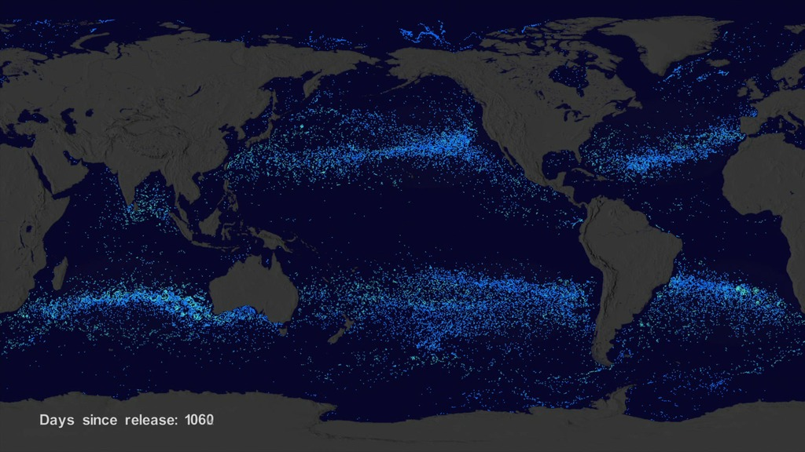

Great Pacific Garbage Patch
Learn, Understand, Act
Learn, Understand, Act
The oceans cover over 70% of our planet and are critical to life. Yet, plastic pollution now threatens their health more than ever. At the heart of this crisis lies the Great Pacific Garbage Patch (GPGP), a vast zone of floating plastic debris between Hawaii and California. This site offers insights into the GPGP: its origins, impacts, and how we can all contribute to the solution.
Plastic never disappears; it just breaks into smaller pieces. These fragments, known as microplastics, linger in the environment, harming wildlife and entering our food chain. By raising awareness and encouraging action, we can start turning the tide.